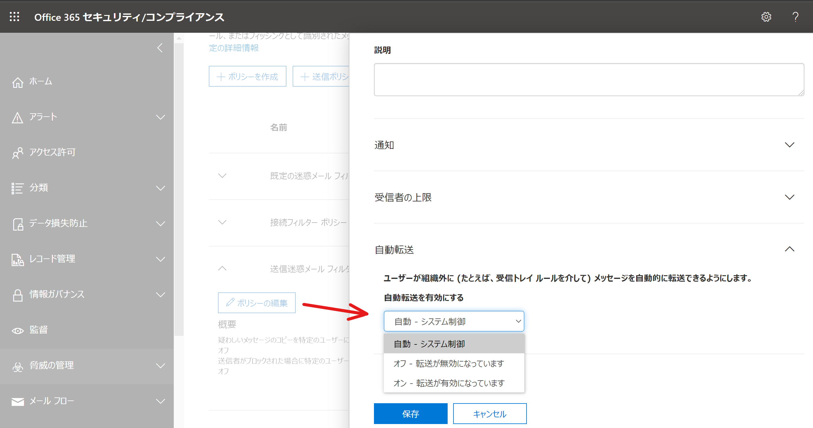
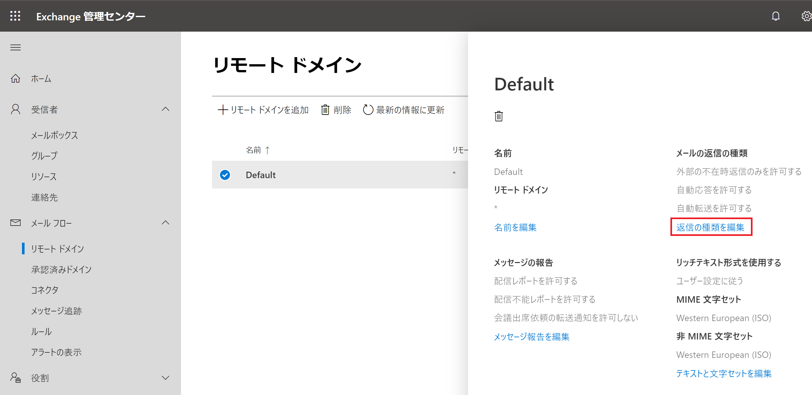
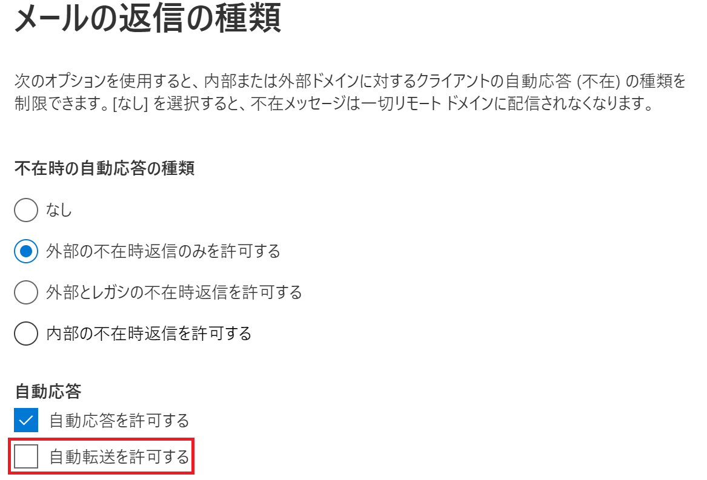
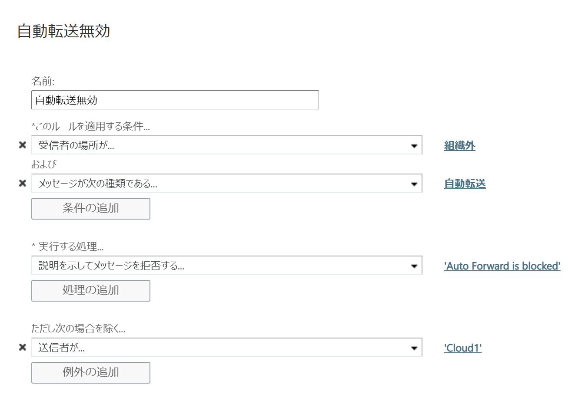
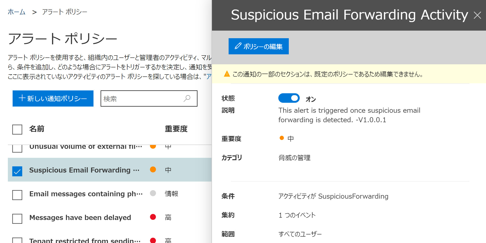
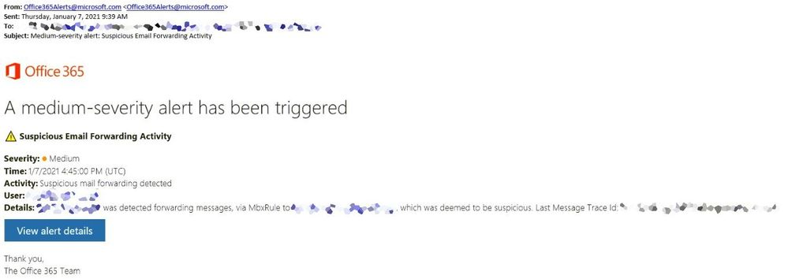

※ この記事は、All you need to know about automatic email forwarding in Exchange Online の抄訳です。
多くのお客様において、ビジネス要件としてメールの自動転送を構成する必要があることを弊社でも認識しています。一方、メールの転送はデータ漏洩につながる可能性があります。例えば、アカウントが乗っ取られた場合に攻撃者はメールの転送を設定し、ユーザーは自分のメールが転送されていることに気づかない可能性があります。これはアカウントが乗っ取られた際に使用される非常に一般的な攻撃手法です。
したがって、転送が有効なメールボックスとメールの転送先を管理者が把握しておくことが重要です。メールの転送を検知する様々な洞察とアラートが提供されていますが、対処療法を行うよりも予防を行うべきです。このブログ投稿では、様々な自動転送の制御について再検討し、それらがどのように連携して、自動転送を本当に許可する必要のあるユーザーの要件をどのように実現することができるのか、考えていきます。
転送を設定する様々な方法
自動転送を制御する方法について説明する前に、自動転送を設定する方法を確認しておきます。
- デスクトップ版 Outlook で仕分けルールとして転送のルールを設定できます。ユーザーは Outlook で [ファイル] - [仕分けルールと通知の管理] にて自動転送を設定できます。Outlook on the web (OWA / Ootw) を使用する場合もルールを設定することが可能です。
- OWA を使用することでユーザーはメールボックスの ForwardingSmtpAddress パラメーターを設定することもできます。この設定は OWA の設定の [メール] - [転送] から利用できます。
- ユーザーは Power Automate (旧 Microsoft Flow) を使用して自動転送を設定することも可能です。
- 管理者は Exchange 管理センター (EAC) でメールボックスのプロパティから転送を構成することが可能です。この設定は、クラシック EAC では [メールボックスの機能] - [メール フロー] - [配信オプション] - [詳細の表示] で設定できます。プレビュー版の EAC では [メール フローの設定の管理] で設定できます。この方法でメールボックスのプロパティから自動転送を構成すると、メールボックスの ForwardingAddress パラメーターに設定がおこわなれます。
- 管理者は Microsoft 365 管理センターでも転送を構成できます。Microsoft 365 管理センターで転送を構成すると、メールボックスの ForwardingSmtpAddress パラメーターに設定されます (ただし ForwardingAddress が設定されている場合はすでに転送が設定されている旨が Microsoft 365 管理センターに表示されます)。
管理者には、組織外へのメールの自動転送を防止および規制するためのいくつかの方法があります。
送信迷惑メール フィルター ポリシーを使用した外部転送の制御
最近リリースされたこの機能は、セキュリティ/コンプライアンス センターの送信迷惑メール フィルター ポリシー (こちら) で利用できます。以下の画面ショットにあるように、3 つのオプションがあります。

注意
オプションが [自動 - システム制御] として設定されている場合、おそらくこれまでまったく構成が行われていません。設定が [自動 - システム制御] のままになっているテナントは、既定でより安全なサービスが提供されるように、強制的に [オフ - 転送が無効になっています] が設定されているものとして動作します。この強制は段階的に開始されており、間もなくすべてのテナントに提供されます。したがって、[自動 - システム制御] は [オフ - 転送が無効になっています] として動作するので自動転送は機能しません。すべてのお客様において、組織に適したポリシーを構成し、本当に必要なユーザーに対してのみ外部への自動転送を有効にすることをおすすめします (既定のポリシーでは無効にして、外部転送を有効にしたポリシーを作成して特定のメールボックスに割り当てることをおすすめします)。もし [自動 - システム制御] が設定されておりまだ転送がブロックされていない場合は、できるだけ早く設定を行う必要があります。
この方法では以下のメリットがあります。
メールボックスのプロパティの ForwardingAddress および ForwardingSmtpAddress を含むすべてのタイプの自動転送をブロックします。
Outlook を使用して構成されたリダイレクトのルールをブロックします。
ポリシーで自動転送をブロックするように設定している場合、外部への自動転送を構成したメールボックスに対して NDR が送り返されます。NDR には以下の診断情報が含まれます。
Remote Server returned ‘550 5.7.520 Access denied, Your organization does not allow external forwarding. Please contact your administrator for further assistance. AS(7550)’
構成が簡単で、管理者は少数またはすべてのメールボックスの外部への自動転送を選択的に許可/ブロックできます。
この方法では以下のデメリットがあります。
- Power Automate (Flow) を使用した転送は現時点ではカバーされていません。Power Automate を使用して設定された外部への転送をブロックするには、Email exfiltration controls for connectors のページに記載されている手順に従ってください。
リモート ドメインを使用した自動転送のブロック
このオプションは、プレビュー版の新しい Exchange 管理センターの [メール フロー] タブで使用できます。


この方法では以下のメリットがあります。
- この設定は、Outlook のルールと OWA のオプション (ForwardingSmtpAddress パラメーター) を使用して構成された自動転送をブロックできます。
この方法では以下のデメリットがあります。
- 管理者が EAC を使用してメールボックスのプロパティ (ForwardingAddress パラメーター) から設定したメール転送はブロックしません。
- この設定は特定のリモート ドメインへの自動転送をブロックします。きめ細かい制御はなく、特定のユーザーには転送を許可して他のユーザーはブロックするというようなことはできません。
- 自動転送されたメールが破棄されたことはユーザーに通知されず、NDR は送信されません。
トランスポート ルールを使用した自動転送のブロック
Exchange 管理センターの [メール フロー] - [ルール] から、自動転送をブロックするトランスポート ルールを作成できます。

この方法では以下のメリットがあります。
- 条件とアクションをきめ細かく制御できます。
- NDR を送信するオプションが利用できます。
この方法では以下のデメリットがあります。
- メッセージ クラス (IPM.note.forward) に基づいて自動転送メールの照合を行います。OWA の転送 (ForwardingSmtpAddress) または管理者がメールボックスのプロパティに設定した転送 (ForwardingAddress) は通常のメッセージ クラス (IPM.Note) を持つため、トランスポート ルールによってブロックされません。
- 構成済みのトランスポート ルールが多すぎる場合、管理が困難になります。
役割ベースのアクセス制御 (RBAC) を使用して自動転送オプションを隠す
これは実際には転送をブロックする方法ではありませんが、ユーザーが OWA での転送の設定をできないように設定項目を削除するという点で関連した内容となります。
この方法では以下のメリットがあります。
- OWA を使用するユーザーに、転送を設定する項目が表示されません。
この方法では以下のデメリットがあります。
- デスクトップ版 Outlook での設定項目は削除されません。
- 既に構成済みの転送設定は引き続き機能します。
大要
紹介した方法を比較するには以下の表を参照してください。
| 自動転送のオプション | リモート ドメイン | トランスポート ルール | 送信迷惑メール フィルター ポリシー |
|---|---|---|---|
| Outlook のルールを使用した転送をブロックする | Yes | Yes | Yes |
| OWA の転送設定 (ForwardingSmtpAddress) を使用した転送をブロックする | Yes | No | Yes |
| 管理者が EAC で設定した転送 (ForwardingAddress) をブロックする | No | No | Yes |
| Power Automate / Flow を使用した転送をブロックする | No | No | No |
| 自動転送がブロックされた際に送信者は NDR を受信するか | No | Yes | Yes |
| カスタマイズときめ細かい制御 | No | Yes | Yes |
上記の複数の設定で自動転送が制御されている場合にどうなるか？
これらすべての手法がどのように連携するのか、頻繁にご質問をいただいています。上記の方法のいずれかで自動転送がブロックされるものの、別の方法では許可されている場合、どうなるでしょうか？例えば、リモート ドメインもしくはトランスポート ルールでは自動転送がブロックされているものの、送信迷惑メール フィルター ポリシーでは許可されている場合、何が起きるでしょうか？その答えは、1 つの設定で制限されていれば、すべての自動転送が制限されます。
例:
- 送信迷惑メール フィルター ポリシーで自動転送がオン (許可) に設定されている
- リモート ドメインで自動転送が無効に設定されている
リモート ドメインの設定によって自動転送はブロックされるでしょうか？はい、リモート ドメインの設定が自動転送をブロックします。トランスポート ルールでブロックする設定を行っている場合も同様にブロックします。
実現したい内容に応じて、上記の機能を組み合わせてご使用いただけます。1 つのオプションですべてのシナリオに対応できるわけではありません。要件に応じて、本当に必要なのであれば 4 つのオプションをすべて実装できます。例えば、リモート ドメインの設定は受信者のドメインごとの制御であるため、一部のドメインを除いてすべての自動転送を制限したい場合に便利な設定です。一方、送信迷惑メール フィルター ポリシーは送信者に応じて制御できます。少数のメールボックス (自動転送を構成する必要のある正当なビジネス要件を持つユーザー) に対してのみ外部への自動転送を許可し、他のすべてのユーザーに対して外部への自動転送をブロックする場合は、送信迷惑メール フィルター ポリシーが最も適しています。もしくは、少数のメールボックスと少数の外部ドメインのみに自動転送を許可する場合は、これら 2 つのオプションを組み合わせて使用できます。他に少し複雑な別の例も紹介します。
以下の要件があるとします。
- 既定で自動転送はブロックする。
- 外部ドメインである contoso.com への自動転送は、すべてのユーザーに対して許可する。
- ジャックとジルは northwindtraders.com への転送を許可するが、他のユーザーには許可しない。
これを達成する方法は複数ありますが、解決策の 1 つは以下のようになります。
- 送信迷惑メール フィルター ポリシーによる外部への転送をオンにする
- 既定の * のリモート ドメインの設定で自動転送を無効にする
- contoso.com と northwindtraders.com の新しいリモート ドメインを作成し、これらのリモート ドメインの自動転送を許可する
- 全ユーザーから northwindtraders.com への自動転送をブロックするトランスポート ルールを作成し、ジャックとジルを例外に指定する
- トランスポート ルールは OWA で設定した転送 (ForwardingSmtpAddress パラメーター) をブロックしないため、RBAC を使用してユーザーが OWA で自動転送を設定できないようにする
でも待ってください、他にもあります！
もしユーザーのメールボックスが乗っ取られて知らないうちに外部への自動転送を設定された場合にも、ユーザーを攻撃者から保護するため、メールの転送に関する新しいアラート ポリシーがセキュリティ/コンプライアンス センターの [アラート ポリシー] にリリースされました。”Suspicious Email Forwarding Activity” という名前のアラート ポリシーです。この新しいアラートは、すべての転送シナリオを追跡し、ユーザーが組織外への自動転送を設定していることを検出します。疑わしいアクティビティが見つかった場合、ユーザーが外部受信者に転送し続ける限り、テナント管理者に 1 日 1 回警告を行います。このポリシーの重要度は中に設定されています。稀なことではありますが、このポリシーでアラートが生成されるということは異常な何かが発生している可能性があります。管理者は、ユーザー アカウントが乗っ取られていないかどうかを常に確認する必要があります。以下にこのポリシーの画面ショットを掲載します。

管理者へ送信されるアラートのサンプルは以下のようになります。

今回のブログは以上です。Exchange Online の運用にお役に立てば幸いです。